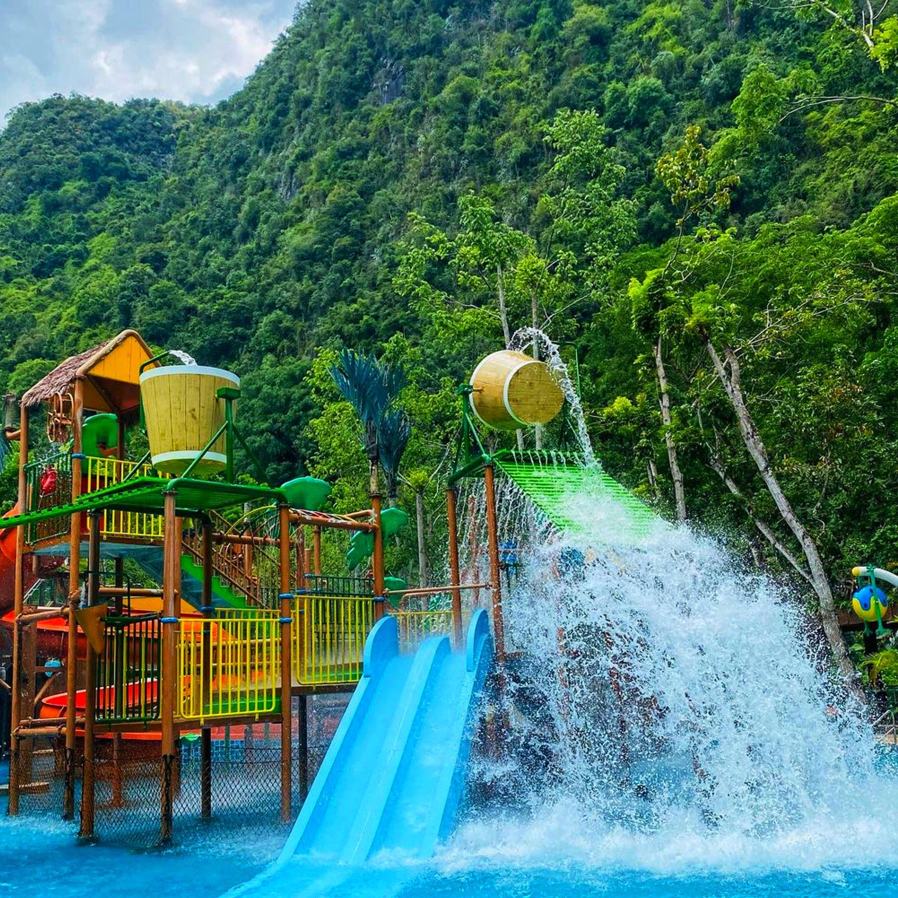

Lost World of Tambun
Tour Detail
No.1, Persiaran Lagun Sunway 1, Sunway City Ipoh 31150 Ipoh Perak
06：00a.m-11:00p.m
06：00a.m-11:00p.m
Description
The Lost World of Tambun is a premier theme park and entertainment complex located in Ipoh, Perak, Malaysia. Nestled within the lush tropical landscape of Tambun, this expansive attraction offers a wide range of activities and attractions suitable for visitors of all ages.The theme park is built around the concept of a lost civilization, featuring various themed zones that offer a mix of adventure, entertainment, and relaxation. Here are some of the key attractions and experiences you can enjoy at the Lost World of Tambun:
1. Water Park: The water park is one of the main highlights of the Lost World of Tambun, featuring a variety of water slides, pools, and attractions. Visitors can enjoy thrilling rides such as tube slides, body slides, and raft rides, as well as a lazy river and a wave pool.
2. Hot Springs & Spa: The Lost World Hot Springs & Spa is a tranquil oasis where visitors can relax and unwind in natural hot springs pools surrounded by lush greenery. The spa also offers a range of therapeutic treatments and massages to help rejuvenate body and mind.
3. Adventure Park: The adventure park offers a range of adrenaline-pumping activities, including a zipline canopy tour, rock climbing wall, adventure playground, and high ropes course. Visitors can test their courage and agility while enjoying breathtaking views of the surrounding landscape.
4. Tiger Valley: This attraction allows visitors to get up close and personal with majestic tigers in a naturalistic environment. Visitors can watch tiger feeding sessions and learn more about these endangered animals through educational programs.
5. Petting Zoo: Perfect for families with young children, the petting zoo allows visitors to interact with a variety of friendly animals, including rabbits, guinea pigs, goats, and more. Kids can feed and pet the animals while learning about responsible animal care.
6. Lost World Tin Valley: This attraction offers a glimpse into the region's rich tin mining history through interactive exhibits, guided tours, and demonstrations of traditional mining techniques.
In addition to these attractions, the Lost World of Tambun also features dining options, souvenir shops, and special events and performances throughout the year, making it a popular destination for family outings, group excursions, and weekend getaways.
Gallery
